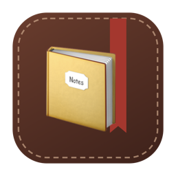
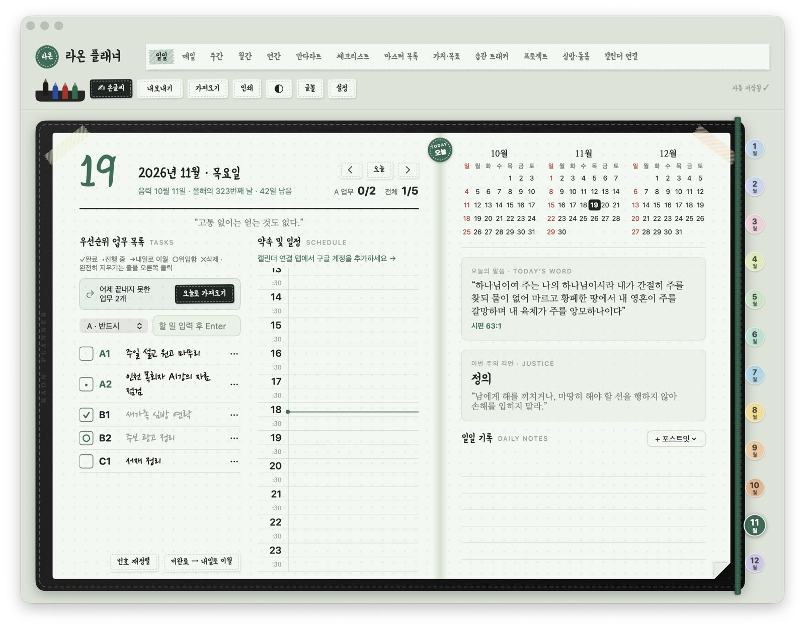
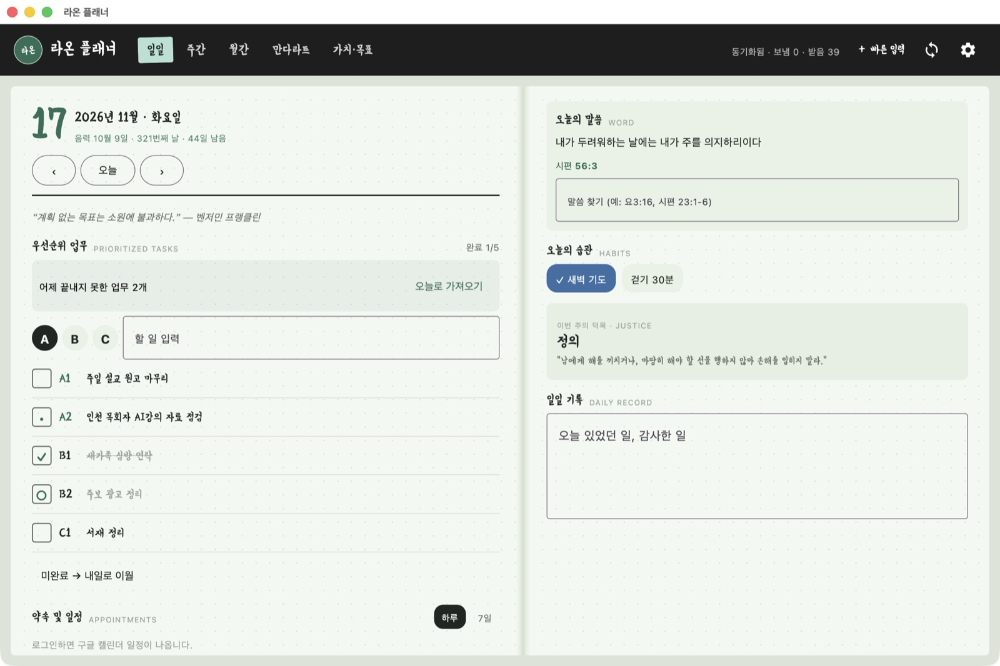
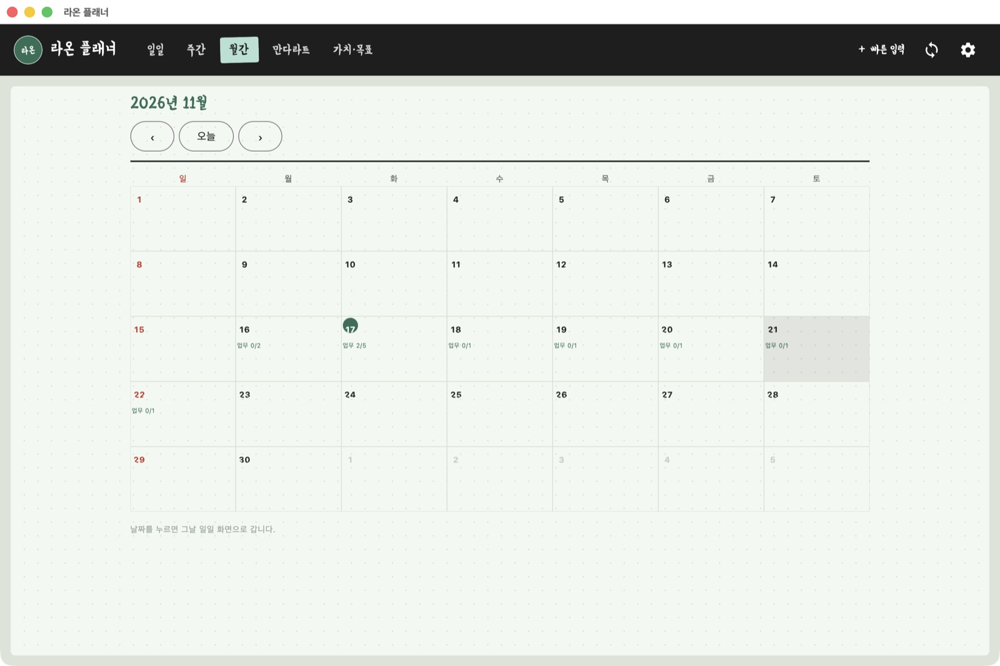
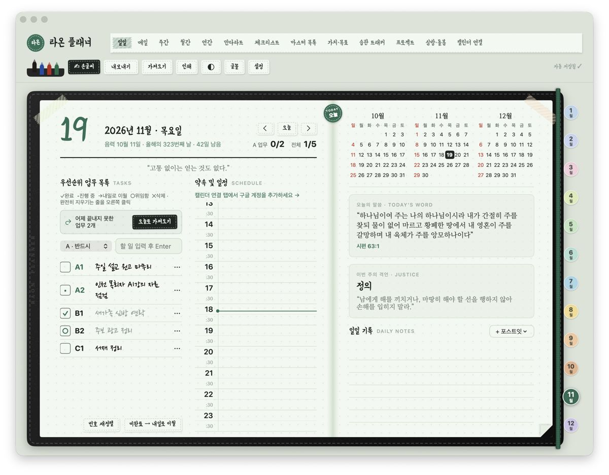
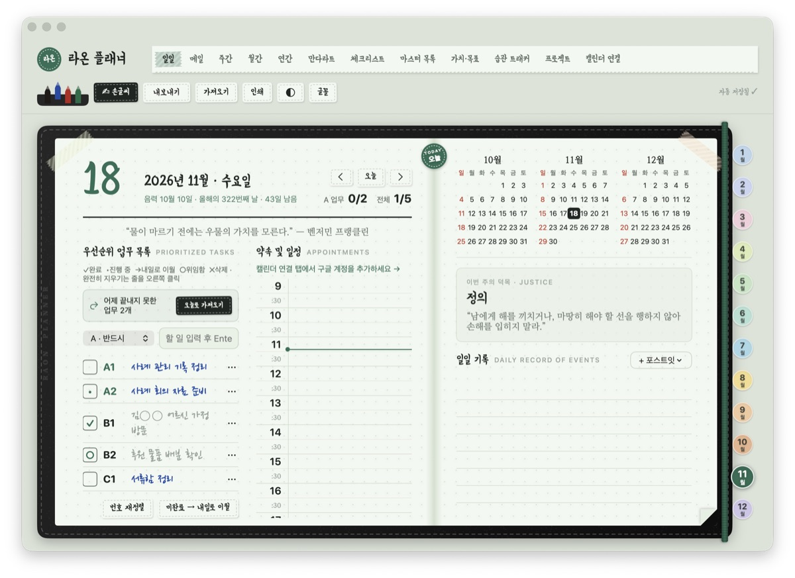
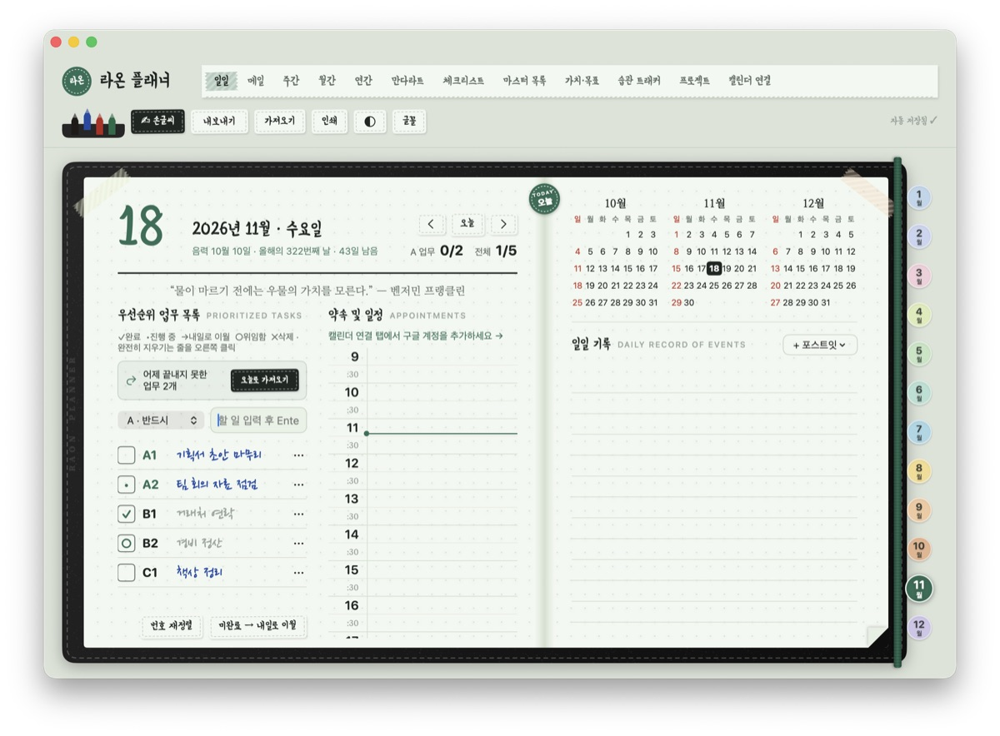

라온 플래너 설치 방법가치에서 오늘 할 일까지
종이 수첩을 컴퓨터에
우선순위 업무, 구글 캘린더 일정, 일일 기록, 만다라트를 한 권의 수첩처럼. 맥·윈도우·안드로이드 휴대폰에서 같은 자료를 씁니다. 목회자·평신도·사회복지사·일반용 네 가지 판이 있고, 무료입니다.
① 판을 고르세요
② 기기에 맞게 받으세요 — 목회자용
맥 1.8.3 · 윈도우 1.4.3 · 안드로이드 1.9.3 · 2026-11-20 · 회원 가입 없이 무료 · 판은 설치한 뒤에도 설정에서 바꿀 수 있습니다

일일 화면 — 왼쪽 면에 오늘 할 일과 일정, 오른쪽 면에 말씀·격언·일일 기록
한 권의 수첩, 세 곳에서
구글 드라이브의 앱 전용 숨김 공간으로 자료가 저절로 맞춰집니다.

🍎 맥
가장 기능이 많습니다. 메일 요약, Google Tasks, 아침 브리핑·저녁 돌아보기 창, 메뉴 막대, 인쇄까지.

🪟 윈도우
맥과 같은 가죽 수첩 디자인. 일일·주간·월간·연간·만다라트·체크리스트·마스터 목록·가치와 목표·습관·프로젝트·돌봄까지.

📱 안드로이드
밖에서 업무를 체크하고 일정을 넣습니다. 일일·주간·월간·만다라트·목표 탭, 아침 7시 브리핑 알림, 빠른 입력.
네 가지 판
기능은 모두 같고, 말씀·격언과 예시·템플릿이 다릅니다. 설치한 뒤에도 설정 → 판에서 바꿀 수 있습니다.
| ⛪ 목회자용 | 🙏 평신도용 | 🤝 사회복지사용 | 📒 일반용 | |
|---|---|---|---|---|
| 오늘의 말씀 · 말씀 찾기 | ✓ | ✓ | — | — |
| 이번 주의 격언 (13가지) | ✓ | ✓ | ✓ | — |
| 체크리스트 템플릿 | 주일 예배 · 심방 · 교회 행사 · 출장 | 교회 행사 · 모임 · 출장 · 여행 | 가정 방문 · 사례 회의 · 프로그램 운영 · 출장 | 모임 · 출장 · 여행 · 이사 |
| 주간 계획 처음 역할 | 목회 · 가정 · 공부 · 개인 | 직장 · 가정 · 교회 봉사 · 개인 | 현장 · 기관 · 가정 · 자기 돌봄 | 일 · 가정 · 성장 · 건강 |

⛪ 목회자용 — 말씀과 격언
🙏 평신도용 — 말씀과 격언

🤝 사회복지사용 — 격언만

📒 일반용 — 둘 다 없이
할 수 있는 것
종이 플래너의 흐름 — 가치 → 목표 → 오늘 할 일 — 을 그대로 살렸습니다.
- ✅ 우선순위 업무A·B·C와 번호, 완료 ✓ · 이월 → · 위임 ○ 표시, 어제 남은 일 가져오기
- 📅 구글 캘린더개인 Gmail과 교회 Workspace 계정을 함께, 화상회의 ‘참가’ 단추
- ⚡ 빠른 입력“내일 오후 3시 심방”이라고 쓰면 일정, “A 주보 원고”는 업무로
- 📖 오늘의 말씀목회자용·평신도용: 날마다 한 구절, “요3:16”처럼 찾아보기 (성경 파일은 직접 넣기 — 아래 안내)
- 🎯 만다라트핵심 목표 하나, 세부 목표 8개, 실천 항목 64개. 항목을 오늘 업무로 보내기
- 🧭 가치와 목표지배 가치마다 목표, 프로젝트와 단계, 마스터 목록
- 🔁 습관 트래커새벽 기도, 걷기… 날마다 동그라미 체크
- 🗓 주간 · 월간 · 연간일요일 저녁 ‘주간 계획 시간’에 이번 주 소중한 것 먼저
- ✍️ 손글씨 · 글꼴제목·본문·손글씨 글꼴을 직접 고르기, 펜 색 네 가지
- ☁️ 동기화 · 백업맥·윈도우·휴대폰이 같은 자료, 맥은 날마다 자동 백업
- 🤝 돌봄 기록부심방·상담 기록, 기도 제목, 생일, 다음 연락일 — 그날 ‘오늘 챙길 사람’으로 알려 줌
- ⏱ 집중 타이머 · 시간 잡기업무에서 25분 집중, 주간 집중 시간 합계 · 업무를 시간표에 끌어다 놓아 일정으로
- 🎤 한꺼번에 · 말로 넣기“내일 3시 심방, A 주보 원고 그리고 …” 여러 개를 한 번에, 휴대폰은 말로
- 📱 홈 화면 위젯안드로이드 홈 화면에 오늘 남은 업무와 챙길 사람
- 🔔 자동 업데이트새 버전이 나오면 알려 주고, 누르면 받아서 설치하고 다시 켜짐 (자료 그대로)
- 🎨 바탕색 · 보이기바탕색 6가지, 오늘의 말씀·격언 끄기, 체크리스트 템플릿 직접 고치기

목표를 한 장에
만다라트에 한 해의 목표를 세우고, 실천 항목을 눌러 오늘 업무로 보냅니다. 가치·목표 화면에서는 지배 가치마다 목표와 프로젝트를 묶어 봅니다.
글꼴은 위쪽 글꼴 단추에서 바로 바꿉니다.

- 맥(macOS 14 이상) 또는 윈도우 10·11 컴퓨터, 안드로이드 휴대폰(선택)
- 구글 계정 하나 (개인 Gmail — 동기화와 캘린더에 씁니다)
자바 같은 다른 프로그램을 따로 깔 필요가 없습니다. 윈도우용에는 필요한 것이 모두 들어 있습니다.
설치 방법
처음 한 번만 경고 창이 나옵니다. 유료 인증을 받지 않은 무료 프로그램이라 나오는 안내입니다.
🍎 맥
- 맥용 받기로 받은 파일을 두 번 누릅니다.
- 라온 플래너를 Applications 폴더로 끌어 놓습니다.
- 처음 열 때 “확인할 수 없습니다”가 뜨면 → 시스템 설정 → 개인정보 보호 및 보안 맨 아래 그래도 열기.
- 키체인 암호를 물으면 맥 암호를 넣고 항상 허용.
🪟 윈도우
- 윈도우용 받기로 받은 zip을 오른쪽 클릭 → 모두 압축 풀기.
- 풀린 RaonPlanner 폴더의 설치하기를 두 번 누릅니다.
- “Windows의 PC 보호” 창이 뜨면 추가 정보 → 실행.
- 바탕화면과 시작 메뉴에 라온 플래너가 생깁니다.
📱 안드로이드
- 휴대폰 브라우저로 이 페이지를 열고 안드로이드 받기.
- 받은 파일을 열고 이 출처 허용을 켭니다.
- “Play 프로텍트” 경고가 뜨면 무시하고 설치.
🔑 처음 구글 로그인할 때
“Google에서 확인하지 않은 앱” 화면이 나오면 고급 → 라온 플래너(으)로 이동 → 권한을 허용하세요. 자료는 내 구글 드라이브의 앱 전용 숨김 공간과 내 컴퓨터에만 저장되고, 만든 사람에게 보내지지 않습니다.
교회 Google Workspace 계정은 관리자가 ‘라온 플래너’를 신뢰하는 앱으로 등록해야 로그인됩니다. 개인 Gmail은 바로 됩니다.
새 버전이 나오면 같은 방법으로 받아 다시 설치하세요. 자료와 로그인은 그대로 남습니다.
알아 두실 점
📖 개역개정 성경은 들어 있지 않습니다 (목회자용·평신도용)
개역개정 성경은 대한성서공회에 저작권이 있어 프로그램에 넣지 않았습니다. 가지고 계신 성경 파일({"창1:1": "태초에 …"} 형식의 JSON)을 설정 → 성경 → 파일 가져오기로 넣으면 오늘의 말씀과 “요3:16” 찾기가 됩니다.
🙏 언제든 연락 주세요
안 되는 것이 있거나 이런 기능이 있었으면 좋겠다는 생각이 드시면 알려 주세요.
💬 카카오 오픈채팅으로 연락하기회원 가입 없이 카카오톡으로 바로